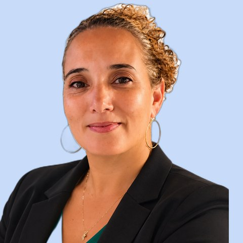
Nelly MarotPrévention santé · Mayotte
Osez ! Pas besoin d'avoir toutes les réponses pour susciter une prise de conscience.
Ce que ça m'a apporté : une sensibilisation moins donneuse de leçons, plus participative.
En 2h30, vos participant·es relient les 17 objectifs de l'ONU et repartent avec un engagement concret.
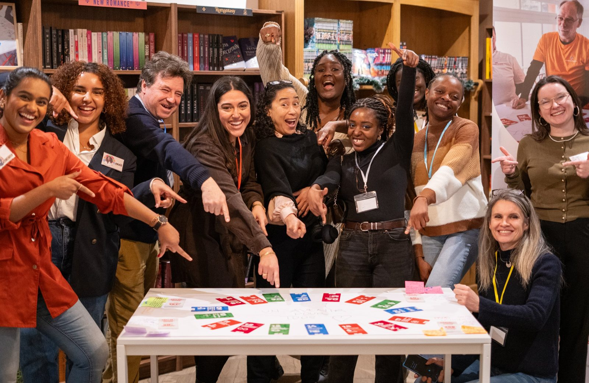
Plus de 100 organisations nous font confiance
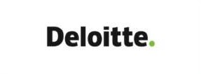
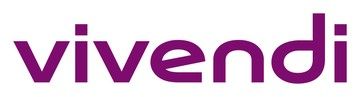
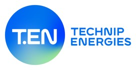
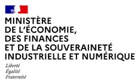
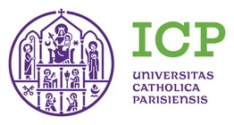
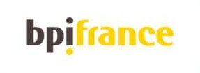
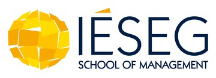
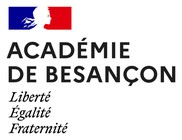
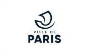
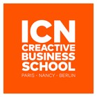
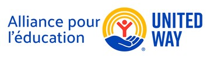
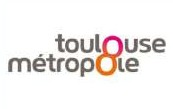
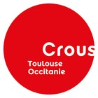
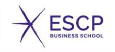
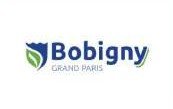
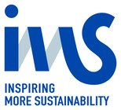
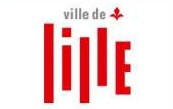
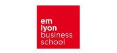
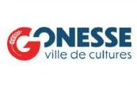
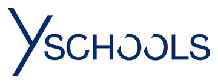
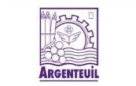
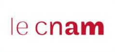
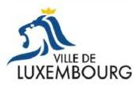
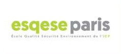
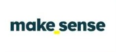
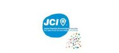
Une journée de formation, le jeu chez vous et une communauté de plus de 50 animateur·rices pour faire rayonner l'atelier autour de vous.
École, collectivité, entreprise ou association : un atelier clé en main, adapté à vos enjeux.

Osez ! Pas besoin d'avoir toutes les réponses pour susciter une prise de conscience.
Ce que ça m'a apporté : une sensibilisation moins donneuse de leçons, plus participative.
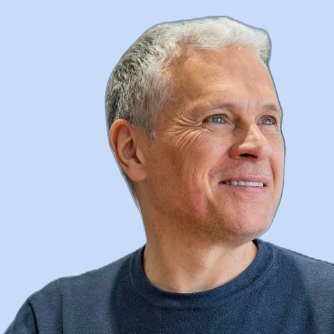
Pas besoin d'être un professionnel du développement durable, ni de la formation.
Ce que ça m'a apporté : la légitimité de faire passer des messages de manière ludique.
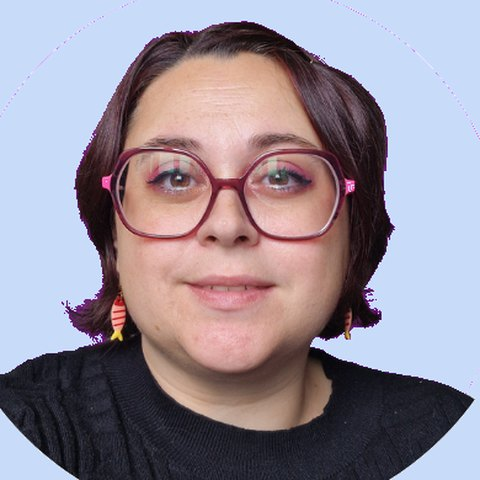
Simple à utiliser, simple à comprendre, adapté à tous les profils. On fonce !
Ce que ça m'a apporté : plus de polyvalence sur tous les sujets.
Relier les 17 ODD et leurs chiffres clés.
Choisir un défi, construire une solution en groupe.
Présenter son projet, repartir avec un engagement.
Plus de 50 animateur·rices font déjà rayonner la Fresque de l'Engagement Durable® partout en France, et bientôt au-delà. Nous vous formons en une journée et vous accompagnons ensuite.
Consultant·es, enseignant·es, conseiller·es, bénévoles : des parcours très différents, une même envie de transmettre. Chaque nouvelle promo fait grandir la communauté.
Osez ! Pas besoin d'avoir toutes les réponses pour susciter une prise de conscience.
Ce que ça m'a apporté : une sensibilisation moins donneuse de leçons, plus participative.
Pas besoin d'être un professionnel du développement durable, ni de la formation.
Ce que ça m'a apporté : la légitimité de faire passer des messages de manière ludique.
Simple à utiliser, simple à comprendre, adapté à tous les profils. On fonce !
Ce que ça m'a apporté : plus de polyvalence sur tous les sujets.
Rejoindre le réseau, c'est œuvrer à plusieurs !
Ce que ça m'a apporté : de l'élan et un outil clé en main.
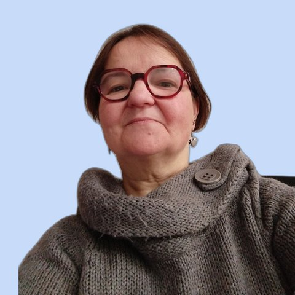
Lance-toi : que du positif !
Ce que ça m'a apporté : de la confiance en moi.
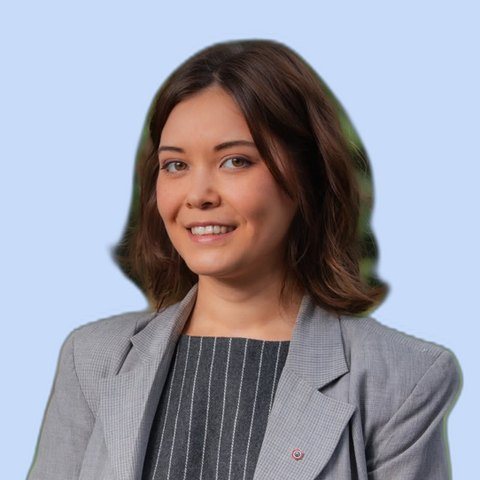
Partager mes convictions avec d'autres personnes prêtes à s'engager.
Ce que ça m'a apporté : le sentiment d'être utile.
Laissez-vous embarquer par la vitalité du collectif.
Ce que ça m'a apporté : la force de l'intelligence collective.
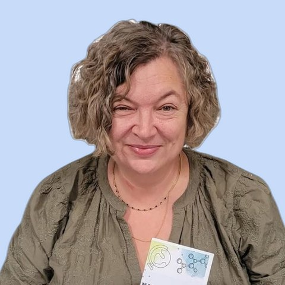
Il n'y a rien à perdre, tout à gagner.
Ce que ça m'a apporté : un nouvel élan.
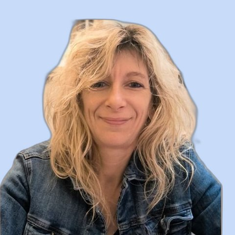
Fonce ! Et laisse-toi porter.
Ce que ça m'a apporté : d'arrêter de douter.
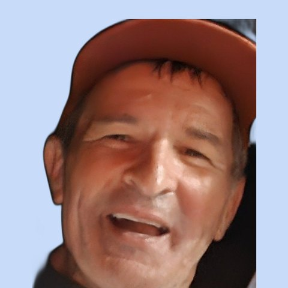
J'ai des étoiles dans les yeux quand j'en parle.
Ce que ça m'a apporté : porter des valeurs auprès des jeunes.
7 heures immersives avec notre formateur et votre promo, en distanciel ou en présentiel à Paris. Vous repartez prêt·e à animer.
Les 42 cartes et leur logique, le déroulé complet de 2h30, l'adaptation à chaque public.
Une posture neutre et structurante, la gestion des dynamiques de groupe, un cadre inclusif.
La co-construction d'un projet citoyen avec la Carte Solution, et la formulation des engagements.
Les 17 ODD reliés entre eux, avec un quiz interactif.
En petits groupes, un projet citoyen autour d'un défi.
Pitch, vote et carte d'engagement personnalisée.
Même journée, même jeu, même accompagnement. Paiement en plusieurs fois sans frais.
Consultant·es, formateur·rices, indépendant·es qui veulent en faire une activité.
Enseignant·es, agents, salarié·es et bénévoles d'un établissement, d'une collectivité, d'une entreprise ou d'une association.
30 min avec l'équipe pour parler de votre projet et choisir votre date.
Charte, paiement, guide d'introduction et accès à ma promo.
7 h avec ma promo, puis je reçois mon jeu à domicile.
Dans ma structure, pour mes clients ou pour l'Institut.
Nous sommes là pour vous former, vous accompagner et faire rayonner l'outil avec vous auprès de vos publics.
Un coaching de groupe en visio : un point clé de l'animation, vos retours, vos réussites.
Un groupe WhatsApp pour échanger avec les animateur·rices de votre promotion.
Une ressource, une actu du développement durable et une info de l'Institut.
L'Institut Citoyen vous propose des ateliers selon vos disponibilités.
Responsable de la formation, votre formateur
Cofondatrice et responsable des partenariats
Rejoindre le réseau, c'est œuvrer à plusieurs !
Ce que ça m'a apporté : de l'élan et un outil clé en main.
Lance-toi : que du positif !
Ce que ça m'a apporté : de la confiance en moi.
Il n'y a rien à perdre, tout à gagner.
Ce que ça m'a apporté : un nouvel élan.
Puis le 9 janvier 2027. 6 à 8 futur·es animateur·rices par promo.
Un outil de sensibilisation ludique pour vos élèves, vos agents, vos collaborateur·rices ou vos bénévoles. Dites-nous en quelques mots votre projet.
Entreprises
Collectivités et institutions
Enseignement supérieur et associations
Ils ont aussi organisé la Fresque de l'Engagement Durable®
Des ateliers avec les collaborateurs, dans le cadre d'un mécénat.
Un parcours pilote avec le pôle jeunesse et une soirée citoyenne.
Programme 2026-2027 : 150 à 250 jeunes, 20 ambassadeurs formés.
Un atelier renouvelé pour les étudiant·es du M2 Manager QSE.
Vos publics découvrent les 17 ODD et le rôle qu'ils peuvent jouer.
Un jeu coopératif qui fait travailler ensemble des personnes qui se côtoient peu.
Chaque groupe construit une solution applicable chez vous.
Les engagements nourrissent votre RSE, votre projet d'établissement ou votre politique locale.
Publiée en 2026 par l'ISO et le PNUD, elle demande des équipes compétentes et sensibilisées. La Fresque de l'Engagement Durable® repose exactement sur ce référentiel.
Une campagne de plus ne suffit pas : l'atelier fait comprendre, fait débattre et transforme les intentions en engagements concrets, mesurables dans vos rapports.
Les 17 ODD, un cadre reconnu qui relie social et environnement, celui de la norme ISO 53001.
Chaque groupe repart avec un projet et des engagements concrets.
Pour tous les publics dès 10 ans, en classe entière comme en séminaire.
Animation, matériel et livrable inclus. Votre atelier sous 2 à 3 semaines.
Des animateur·rices certifié·es dans 11 régions, près de chez vous.
Les engagements et photos sous 7 jours, et un point à 3 mois.
Commencez par un atelier, puis allez plus loin. Nous ajustons la durée et le contenu à vos objectifs.
| Impulsion : sensibiliser | Mobilisation : passer à l'action | Transformation : ancrer | |
|---|---|---|---|
| Écoles et campus | Un atelier en classe entière ou pour un groupe d'étudiant·es | Plusieurs classes et des éco-délégués formés comme ambassadeurs | Des enseignant·es formé·es et un programme sur l'année |
| Entreprises | Un atelier pour un service, un séminaire ou un temps fort RSE | Des ateliers sur plusieurs sites et des ambassadeur·rices RSE | Des collaborateur·rices formé·es et un suivi des engagements |
| Collectivités | Un atelier pour vos agents ou vos habitant·es | Des ateliers dans les quartiers et des jeunes ambassadeurs | Des agents formés et un programme sur le territoire |
| Associations | Un atelier pour l'équipe, les bénévoles ou le public | Des ateliers réguliers pour vos publics | Des bénévoles formé·es à l'animation |
Votre premier atelier est déduit si vous signez un parcours sous 60 jours. Ateliers bénévoles ou soutenus possibles pour les petites structures.
Nous sélectionnons avec vous les cartes Défis qui parlent à vos participant·es, sur les thématiques de votre territoire ou de votre organisation.
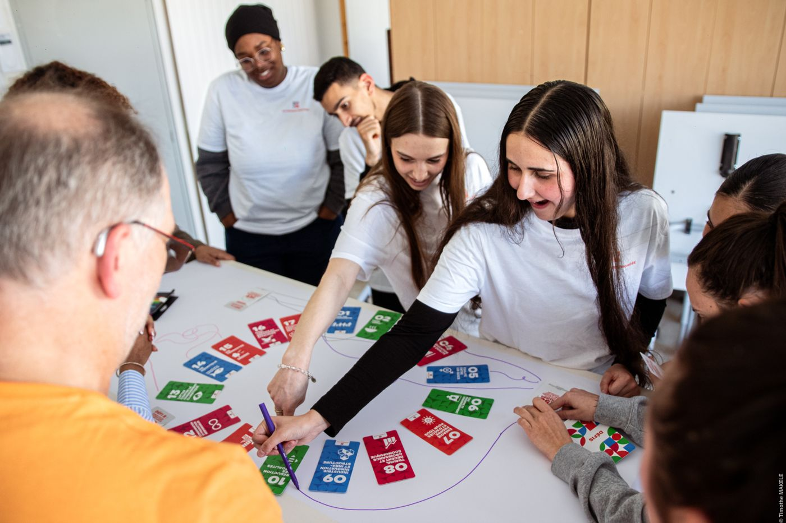
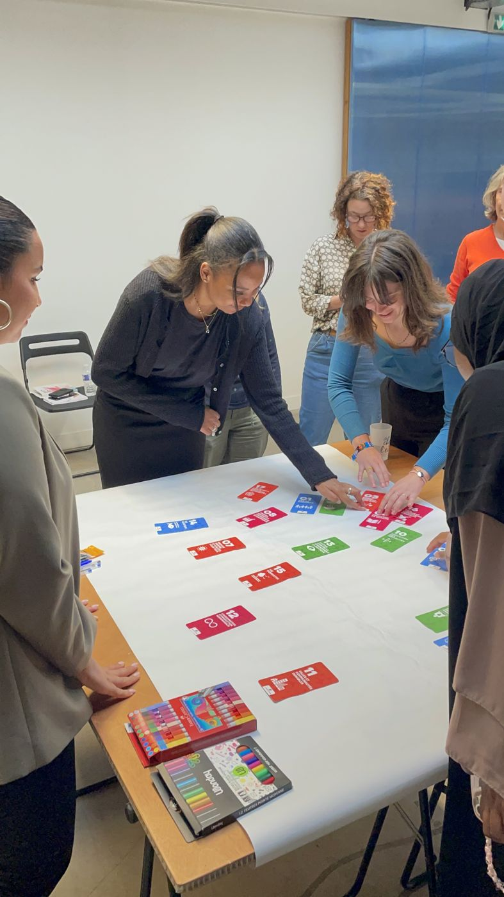
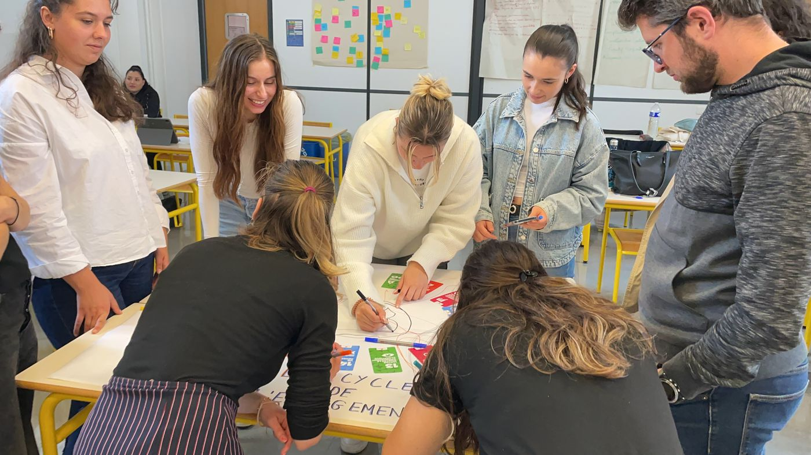
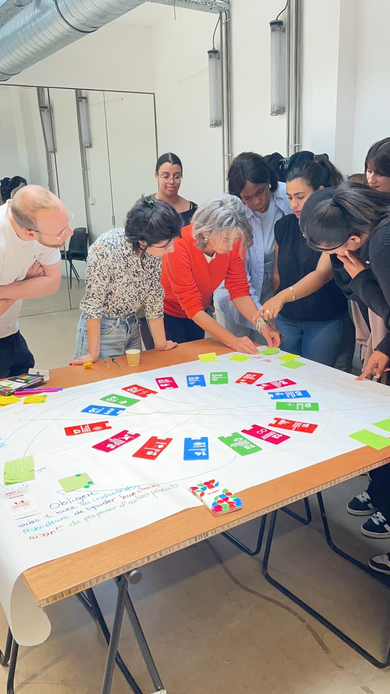
Le formulaire ou un rendez-vous de 30 min. Réponse sous 48 h.
Format, défis, date et lieu, adaptés à votre projet.
Une salle avec des tables : nous apportons tout et animons.
Engagements, photos et chiffres prêts pour vos rapports.
Le grand jeu du développement durable : en équipe, on relie les enjeux du monde, puis on construit ses propres solutions.
Les raisons de s'engager, puis les 17 ODD reliés entre eux et un quiz interactif.
En petits groupes, chacun choisit un défi et construit une solution avec la Carte Solution.
Pitch, vote du projet le plus inspirant, carte d'engagement et kit d'action.
Un certificat d'engagement et un point à 3 mois sur les engagements tenus.
Adoptés en 2015 par les 193 États membres des Nations unies, les ODD forment l'Agenda 2030 : un cadre commun pour éradiquer la pauvreté, protéger la planète et réduire les inégalités.
![Les 17 Objectifs de Développement Durable de l'ONU : pas de pauvreté, faim zéro, bonne santé et bien-être, éducation de qualité, égalité entre les sexes, eau propre et assainissement, énergie propre et d'un coût abordable, travail décent et croissance économique, industrie innovation et infrastructure, inégalités réduites, villes et communautés durables, consommation et production responsables, mesures relatives à la lutte contre les changements climatiques, vie aquatique, vie terrestre, paix justice et institutions efficaces, partenariats pour la réalisation des objectifs](img/odd-17-objectifs.jpg)
Un objectif, sa définition, un chiffre clé de l'ONU et ses liens avec les autres ODD.
Des problèmes concrets et chiffrés, choisis selon votre public et votre territoire.
Un canevas inspiré du design thinking pour passer du problème à la solution.
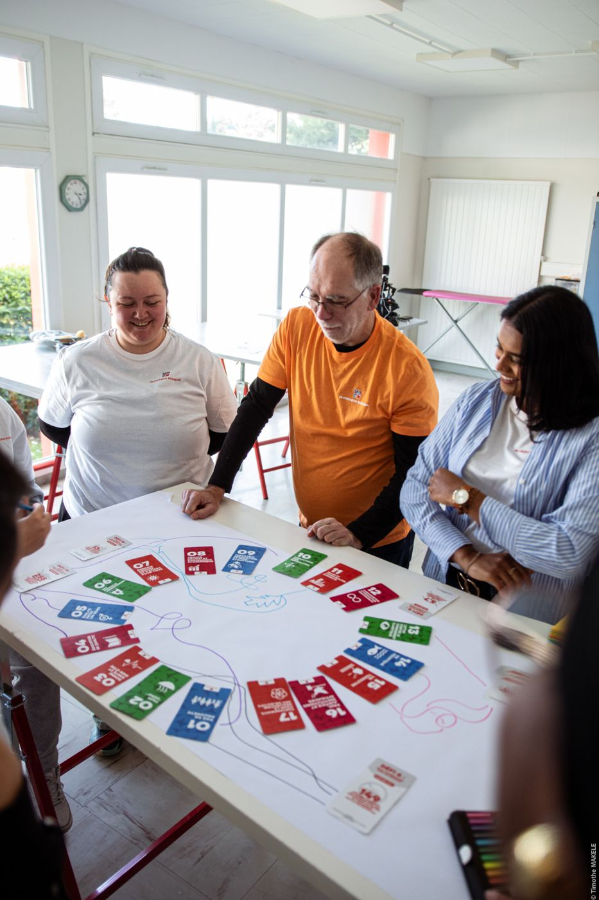
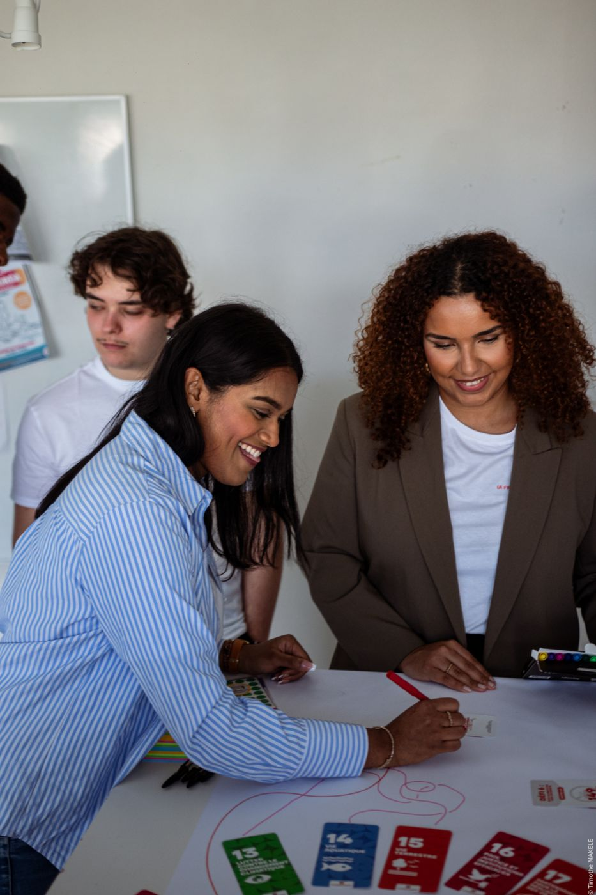
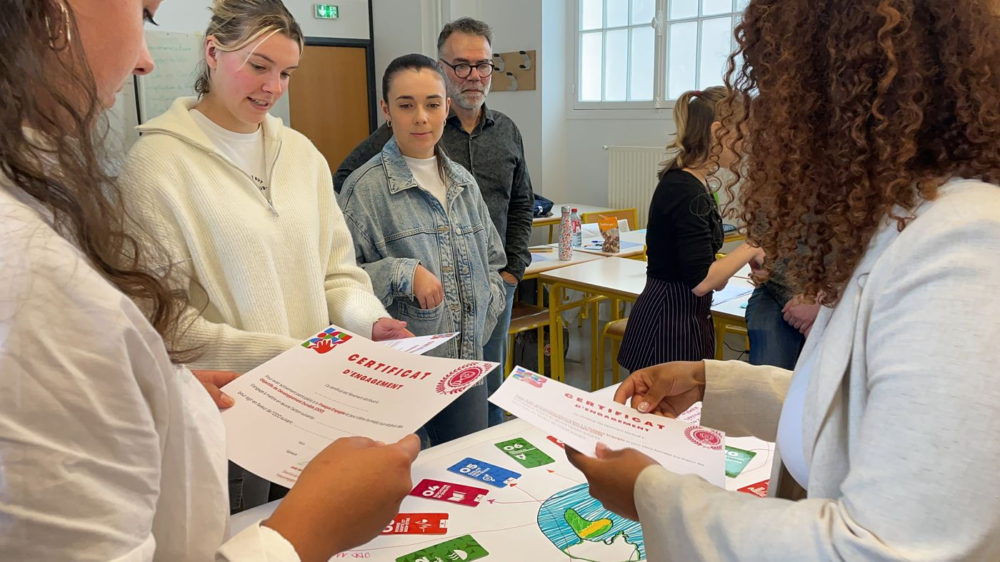
Chaque atelier est animé par un·e animateur·rice formé·e et certifié·e par l'Institut Citoyen, avec le même déroulé et le même matériel. Une clé personnelle relie chaque atelier, ses avis et son bilan.
L'Institut Citoyen est une association loi 1901. Elle crée des espaces pour formaliser l'engagement et forme celles et ceux qui veulent le transmettre.
Comment transmettre l'engagement en pleine crise sanitaire ? Anaïs crée l'Institut Citoyen.
Avec Maurine, la Fresque de l'Engagement Durable®, sur les ODD : social, sociétal et environnement.
Avec des jeunes, dont les idées d'engagement nous ont convaincues.
Près de 3 000 participant·es, plus de 50 animateur·rices formé·es.
Former des animateur·rices qui font émerger des solutions sur leur territoire.
Un mouvement de faiseurs et de faiseuses : 1 000 animateur·rices d'ici 2029.
Les projets nés des ateliers, puis les personnes engagées.
Des ateliers bénévoles ou soutenus pour les structures sans budget.
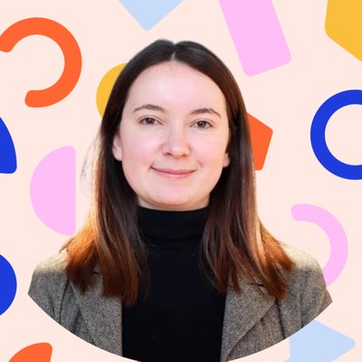
Cocréatrice de la Fresque de l'Engagement Durable®. Passée par la direction générale du Trésor, où elle a formé les agents à la transition écologique, elle est aujourd'hui chargée de mission Innovation à l'Ambassade de France en Afrique du Sud.
Cocréatrice de la Fresque de l'Engagement Durable®, engagée dans l'associatif depuis toujours. Six ans de conseil RSE auprès de grands groupes et de startups, au service d'une conviction : chacun peut trouver sa façon de s'engager.
Formateur engagé dans la transition sociale et écologique, cinq ans dans le monde associatif. Il enseigne la RSE dans plusieurs écoles et forme les futur·es animateur·rices de la Fresque de l'Engagement Durable®.
50 animateur·rices formé·es et certifié·es font vivre l'atelier partout en France, dans les écoles, les collectivités et les entreprises.
Découvrir notre réseau →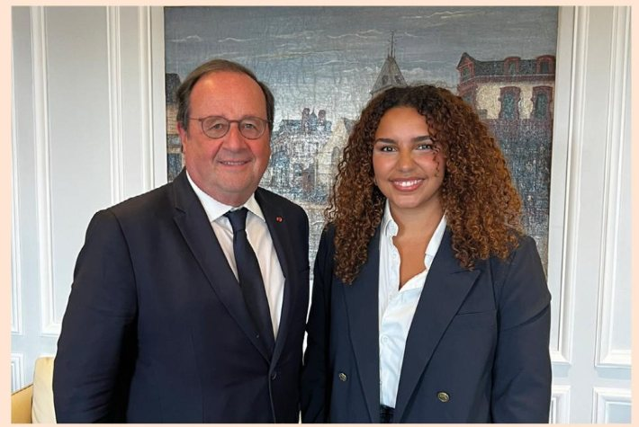
Anaïs Abchar débat avec François Hollande, ancien président de la République, de l'engagement des jeunes. Elle y raconte la naissance de l'atelier avec 15 jeunes d'un centre social de Pontault-Combault.
Voir la publication →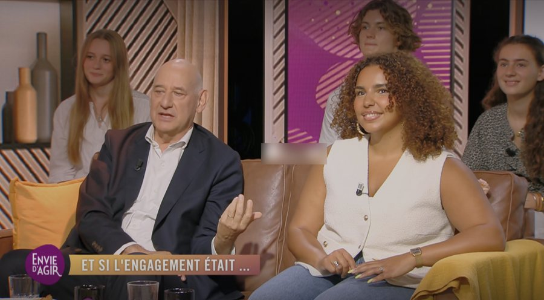
▶Sur le plateau, Anaïs Abchar échange avec le directeur de la Fondation Canal+ et des lycéen·nes en stage de seconde, autour de l'engagement des jeunes.
Regarder →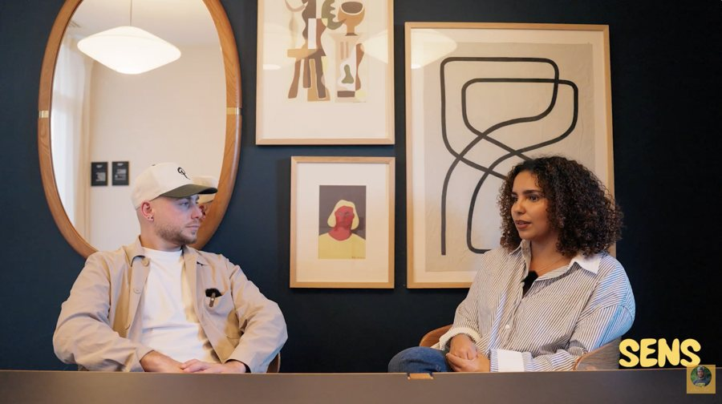
▶Anaïs Abchar revient sur son parcours, ce qui l'a poussée à créer l'Institut Citoyen et sa vision de l'engagement.
Regarder →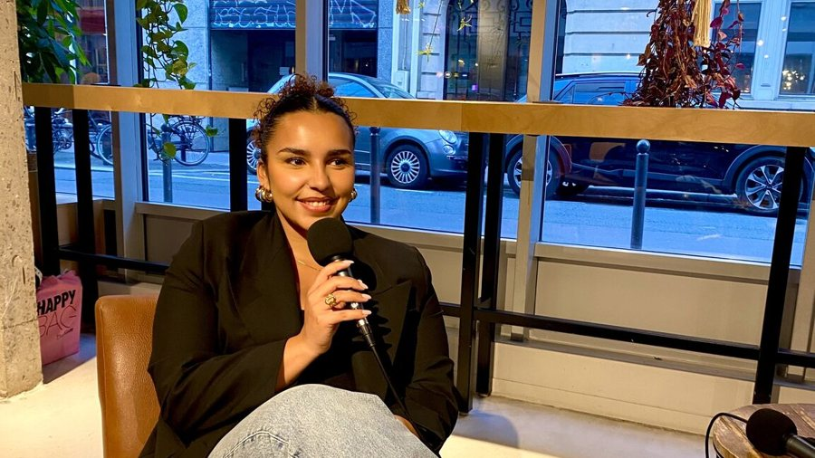
▶Comment l'Institut Citoyen aide chacun, débutant·e ou déjà engagé·e, à passer à l'action concrètement.
Regarder →Remise du prix Talents des Cités, organisé par Bpifrance avec le ministère chargé de la Ville et Radio France.
Regarder →Qui édite ce site, qui l'héberge et à qui écrire.
Dernière mise à jour : 11 novembre 2026
Le site est édité par l'Institut Citoyen, association régie par la loi du 1er juillet 1901, qui porte la Fresque de l'Engagement Durable®.
Maurine Vandervode, présidente de l'Institut Citoyen.
Le site fresque-engagement-durable.org est hébergé par GitHub, Inc. (service GitHub Pages), 88 Colin P. Kelly Jr. Street, San Francisco, CA 94107, États-Unis (github.com).
Le nom de domaine est enregistré auprès de OVH SAS, 2 rue Kellermann, 59100 Roubaix, France.
Fresque de l'Engagement Durable® est une marque déposée de l'Institut Citoyen ([À compléter : n° de dépôt INPI]). L'atelier, ses cartes, ses visuels, ses textes et le présent site sont protégés par le droit d'auteur.
Toute reproduction ou adaptation, totale ou partielle, sans autorisation écrite est interdite. L'animation de l'atelier est réservée aux animateur·rices formé·es par l'Institut Citoyen.
Photographies : Timothé Makélé et Institut Citoyen. Les personnes photographiées ont donné leur accord pour la diffusion de leur image. Logos des partenaires reproduits avec leur accord.
Le traitement de vos données est décrit dans notre politique de confidentialité. L'usage des cookies est détaillé sur la page gestion des cookies.
Nous voulons un site lisible par toutes et tous : contrastes, textes alternatifs sur les images, navigation au clavier. Si vous rencontrez une difficulté, écrivez-nous à contact@institut-citoyen.org, nous vous répondrons et vous transmettrons l'information sous une autre forme.
Pour toute question ou réclamation : contact@institut-citoyen.org. Le site est soumis au droit français.
Ce que nous collectons, pourquoi, combien de temps, et comment exercer vos droits.
Dernière mise à jour : 11 novembre 2026
Le responsable de traitement est l'Institut Citoyen, représenté par sa présidente. Pour toute question sur vos données : contact@institut-citoyen.org.
| Quand | Quelles données | Pourquoi | Base légale | Durée |
|---|---|---|---|---|
| Demande d'atelier | Nom, organisation, e-mail, téléphone, projet | Répondre à votre demande, préparer un devis | Mesures précontractuelles | 3 ans après le dernier contact |
| Prise de rendez-vous | Nom, e-mail, créneau, message | Organiser l'échange de 30 min | Mesures précontractuelles | 3 ans après le dernier contact |
| Inscription à la formation | Identité, coordonnées, facturation, présence, évaluations | Gérer la formation, l'attestation et la facturation | Contrat et obligations légales | Durée du contrat, puis 10 ans pour les pièces comptables |
| Profil d'animateur·rice | Photo, parcours, témoignage, ville | Présenter la communauté sur le site | Consentement | Jusqu'au retrait du consentement |
| Newsletter, si vous vous inscrivez | Vous informer des nouvelles dates et actualités | Consentement | 3 ans sans ouverture, ou jusqu'à désinscription |
Nous ne vendons ni ne louons vos données. Aucune décision automatisée n'est prise à partir de celles-ci.
Seules les personnes de l'équipe qui en ont besoin y accèdent. Nous utilisons quelques prestataires, qui traitent les données pour notre compte :
Lorsque des données sont transférées hors de l'Union européenne, ce transfert est encadré par une décision d'adéquation ou des clauses contractuelles types de la Commission européenne.
Vous pouvez accéder à vos données, les rectifier, les effacer, en limiter l'usage, vous opposer à leur traitement, demander leur portabilité et retirer votre consentement à tout moment. Vous pouvez aussi définir des directives sur le sort de vos données après votre décès.
Écrivez-nous à contact@institut-citoyen.org. Nous répondons sous un mois. Si vous estimez que vos droits ne sont pas respectés, vous pouvez saisir la CNIL (cnil.fr).
Les photos et témoignages d'animateur·rices et de participant·es sont publiés avec leur accord écrit. Pour les mineur·es, l'accord des représentants légaux est recueilli. Chacun peut demander le retrait de sa photo ou de son témoignage à tout moment.
Nous limitons les accès, utilisons des outils sécurisés et ne conservons que les données utiles.
Un site sobre : pas de publicité, pas de pistage.
Dernière mise à jour : 11 novembre 2026
Ce site n'utilise ni cookie publicitaire ni outil de suivi d'une page à l'autre. C'est pourquoi aucun bandeau ne vous est présenté.
| Type | Rôle | Consentement | Durée |
|---|---|---|---|
| Techniques | Faire fonctionner le site | Non requis | Session |
| Mesure d'audience anonyme | Compter les visites, sans suivi individuel ni croisement | Non requis, conformément aux règles de la CNIL | 13 mois au plus |
Les boutons « Prendre rendez-vous » ouvrent Calendly dans un nouvel onglet. Ce service applique alors sa propre politique de cookies. Le formulaire « Organiser un atelier » est fourni par Tally (Belgique), qui applique sa propre politique de confidentialité.
Si nous ajoutons un jour un outil qui nécessite votre accord (vidéo intégrée, réseau social, publicité), un bandeau vous proposera d'accepter ou de refuser en un clic, avec le même poids pour les deux choix. Votre choix sera conservé 6 mois au plus.
Vous pouvez à tout moment bloquer ou supprimer les cookies dans les réglages de votre navigateur.